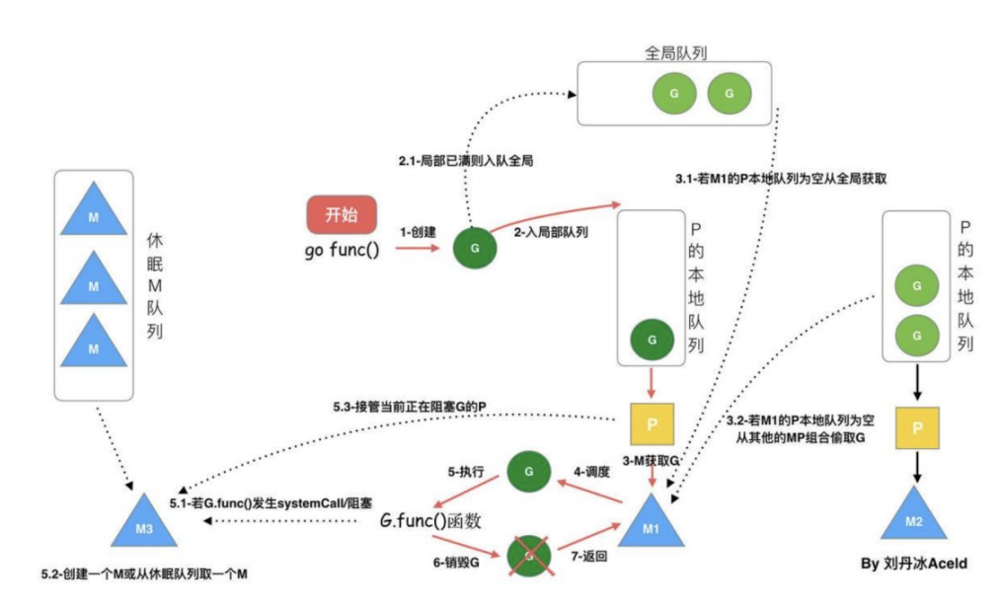

数据类型
1. 值类型：int, float, string, bool, array, stuct
2. 引用类型：slice, map, chan, 空接口, 指针
数据类型区别
1. 值类型：变量存值，内存在栈分配
2. 指针类型：变量存地址，地址指向值，内存在堆分配
变量传递是值拷贝还是引用
取决与变量类型
1. 值传递为值拷贝，其中切片包含对底层数组的引用，在不扩容的情况会影响原始切片， map传递的是指向map内部数据结构的指针的拷贝，会影响原始map
2。 指针传递为引用指针操作原始数据，避免不必要的拷贝，提高性能
new和make的区别
1. new
分配值类型的内存，返回指向零值的指针
2. make
分配引用类型的内存，初始化对应类型后返回类型
切片，chan，map需不需要用make以及区别
1. 切片可以不需要make
使用make可以指定长度与容量进行分配，其中所有元素为零值，只指定长度容量将默认为长度
不使用make切片的长度与容量将由元素或数组范围自动确定
2. chan需要make
3. map可以不需要make
使用make后映射被正确初始化，可以立即存储键值对，没有显式make则go会自动完成初始化
不使用make该map为零值，需要显式调用make初始化才能使用
切片底层与扩容
1. 切片底层为指向底层数组的指针，长度，容量
2. 扩容机制：
2.1 当切片容量不足时，根据版本不同go会自动扩容当前容量2倍或1.25倍
2.2 根据计算出的容量，在堆上分配一个新的数组
2.3 将原切片中的元素复制到新分配的数组中
2.4 更新切片的指针指向新的数据，更新长度与容量
map底层与扩容
1. map底层依赖于哈希表，底层结构体为hmap，维护bucket桶数组， bucket中元素结构为bmap， bmap为bucketCnt-uint8键值对，bucket满了会放到下一个溢出桶中， 通过overflow连接，oldbuckets指向原来的桶
channel底层
底层数据结构为hchan结构体
1. qcount：当前channel中元素个数
2. dataqsiz：环形缓冲区的容量
3. buf：环形缓冲区的指针（有指定缓冲）
4. recvx：下一个接收操作的位置
5. sendx：下一个发送操作的位置
6. recvq：接收等待队列，包含等待从channel接收数据的goroutine
7. sendq：发送等待队列，包含等待向channel发送数据的goroutine
8. lock：互斥锁，用于保护channel数据结构的访问，防止多个goroutine同时修改channel的内部状态
channel缓冲与无缓冲区别
1. 当创建一个无缓冲channel时，它不会分配用于存储元素的缓冲区。发送和接收操作将直接交换数据，并且必须同时准备好，否则操作将阻塞
2. 有缓冲channel会分配一个环形缓冲区来存储元素。发送操作会首先尝试将数据写入缓冲区；如果缓冲区已满，则发送操作将阻塞。 同样，接收操作会首先尝试从缓冲区读取数据；如果缓冲区为空，则接收操作将阻塞
channel关闭后可以读写吗
1. 对于无缓冲channe，关闭后可以读出零值，写则会panic
2. 对于缓冲channe，关闭后可以读完缓冲的值，然后读零值，写则会panic
channel调度
Go的运行时系统包含一个调度器，它负责协调goroutine的执行和channel的发送/接收操作。 调度器会根据channel的状态和等待队列中的goroutine来做出决策，以确保并发操作的高效和公平性
协程控制
1. 通过channel实现协程间通信 ,select控制读写，可以通过time.After或context实现超时
2. WaitGroup控制并发数量，通过Done()减少计数，Wait()等待所有协程完成
上下文context原理
1. channel与sync.Mutext实现
3. cancelCtx，把自己加到父级ctx的children里，cancel方法递归调用children的cancel方法，释放资源
WaitGroup
Add，Done，Wait方法通过原子操作和锁实现计数
sync有什么锁以及区别
1. 互斥锁sync.Mutex, 只有一个goroutine可以访问
2. 读写锁sync.RWMutex, 读锁可以多个，写锁只能一个
3. 条件变量sync.Cond, 用于等待条件满足
4. 信号量sync.Semaphore, 用于控制并发数量
5. 计数器sync.WaitGroup, 用于等待协程完成
5. 计数器sync.Once, 用于保证初始化只执行一次
GMP调度
1. G: goroutine，协程，轻量级线程，go关键字创建
2. M: machine，机器，操作系统线程，go程序在执行时会创建很多M，M负责执行goroutine
3. P: processor，处理器，M的执行单元，M可以绑定多个P，P可以并行执行goroutine
4. 调度：当一个G准备执行时，会被放入P的运行队列，P会从队列中取出一个G，执行，当G执行完毕，会释放P， 调度器会再次尝试获取一个可执行的G，如果没有可执行的G，则阻塞在M上，等待G的唤醒
5. 并行：当一个G被阻塞时，另一个G可以被调度到相同的P上执行，提高执行效率
6. 并发：当一个G被阻塞时，另一个G可以被调度到不同的P上执行，提高执行效率
7. 主动权：当一个G被阻塞时，M会主动让出P，让其他的G执行，提高执行效率
8. 协作式调度：当一个G被阻塞时，会主动寻找其他的G，协作执行，提高执行效率
9. 非抢占式调度：当一个G被阻塞时，不会主动让出P，而是等待调度器唤醒，提高执行效率
10. 协程切换：当一个G执行完毕，会切换到另一个G，提高执行效率
三色标记法
1. 白色：未分配的内存，可以分配
2. 灰色：已分配的内存，不能分配
3. 黑色：已分配的内存，不能分配
4. 初始状态：所有内存都为白色
5. 标记过程：从根对象开始，将其直接可达对象标记为灰色，将其间接可达对象标记为灰色，直到没有灰色对象为止
6. 回收过程：将所有未分配的白色内存释放，并将灰色内存标记为黑色
7. 优点：不需要额外的空间，不需要额外的标记，不需要额外的遍历，只需要记录每个对象的颜色即可
8. 缺点：不能处理循环引用，不能处理对象间的复杂关系
InnoDB与MyISAM的区别
索引
explain解析
sql优化
日志
事务
隔离机制
主从复制原理
锁的类型
缓存类型与使用场景
缓存更新策略
缓存击穿，缓存穿透，缓存雪崩
布隆过滤器
实现延时队列
keys与scan区别
主从复制原理
负载均衡策略
查询方式
简介
RabbitMQ是实现了高级消息队列协议（AMQP）的开源消息代理软件（亦称面向消息的中间件）
使用协议
组件
工作模式
TTL队列
死信队列 (DXL)
延时队列
消息的幂等性
消息的可靠性
消息的顺序性
单例模式
工厂模式
抽象工厂模式
代理模式
策略模式
冒泡排序
快速排序
二分查找法
雪花算法
秒杀系统
爬虫
权限管理系统
组件
pod
管理
二叉树
红黑树
B树
B+树
常用指令
常用脚本
Dockerfile
Docker Compose
原理
配置文件
TCP/IP协议
UDP协议
HTTP协议
HTTPS协议
3次握手
4次挥手
验证书流程
鉴权原理
protobuf
注册与发现
1. etcd
2. consul
3. zookeeper